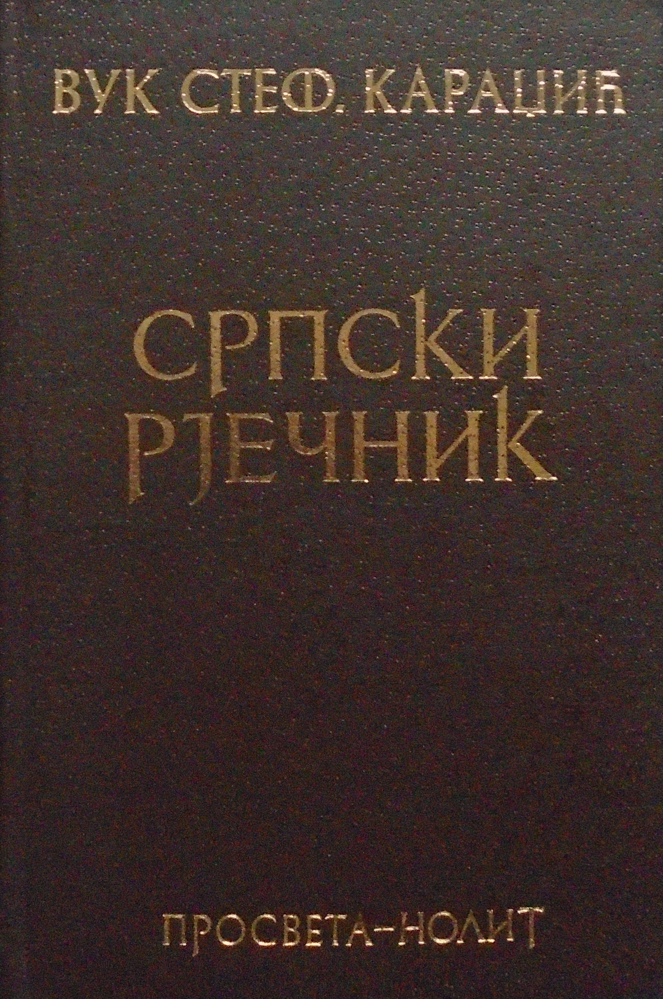

Детаљи књиге

Српски ријечник
Аутор ID: 3
Аутор: Вук Караџић
Жанр: Лингвистика, Етнологија
Формат: Тврди повез (Репринт)
Број страна: 800+
Цена: 2.500 РСД
ISBN: 978-86-17-15201-4
Опис: Чувено дело Вука Караџића из 1818. године (допуњено 1852). Ово није само речник језика, већ и ризница народних обичаја, веровања и умотворина. Вук је кроз објашњења речи описао читав народни живот и културу свог времена.